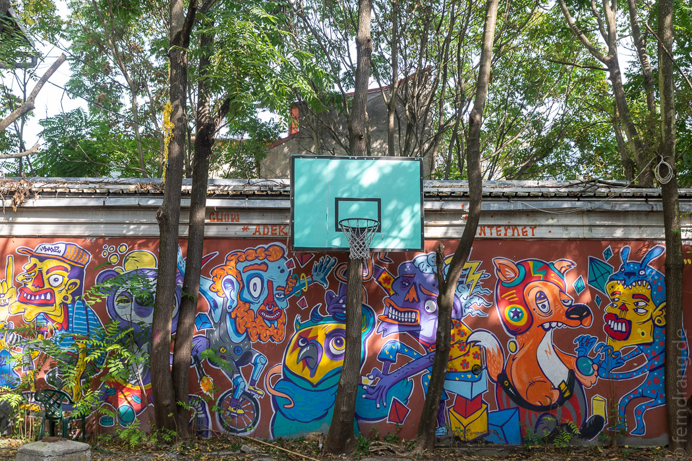

Zur Hauptstadt Ljubljana (oder Laibach) ist es nirgendwo in Slowenien weit. Wir hatten vorerst genug Berge und Natur und haben uns auf etwas urbanes Leben gefreut. Ljubljana ist wirklich hübsch. Auf einem Hügel liegt die notwendige Burg und blickt auf das friedliche Gewusel der Altstadt hinab. Die Ljubljanica ist ein schmales Flüsschen und wirkt eher wie ein Kanal. Die vielen Brückchen erinnern an Holland. Rund herum liegt ein Café neben dem nächsten und lädt dazu ein den Nachmittag zu vertrödeln.

Es gibt viele grüne Plätze mit prächtigen alten Bauwerken, die aus Laibach ein (sehr) kleines Wien machen. Die Baulust hat leider nie aufgehört, weshalb einige Monstrositäten aus den Siebzigern die Dächer überragen. Ebenso in die Kategorie „Mehr ist zu viel“ fallen die fiesen Skulpturen des Bildhauers Brdar, die überall in der Stadt herumstehen und Kindern Angst machen.
In einem Café am Kanal konnten wir ein bisheriges Versäumnis nachholen: Den Genuss einer Krema Šnita. Die typisch slowenische Cremeschnitte ist eine Köstlichkeit, die mit „Pudding, Sahne und Blätterteig“ nur unzureichend beschrieben ist und schnell süchtig macht.
Vom Laibacher Schloss aus hat man einen schönen Blick über die Stadt. In den Gassen darunter gibt es viele schöne kleine Läden und Restaurants. Wir haben uns gemütlich durch die Straßen treiben lassen. Ein besetzter Häuserblock ist voller interessanter Grafitti-Kunst. Nur das zeitgenössische Museum deprimiert ein wenig, weil dort Kunst mit Protest verwechselt wird. 